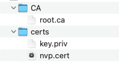
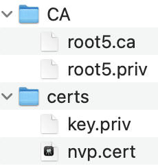
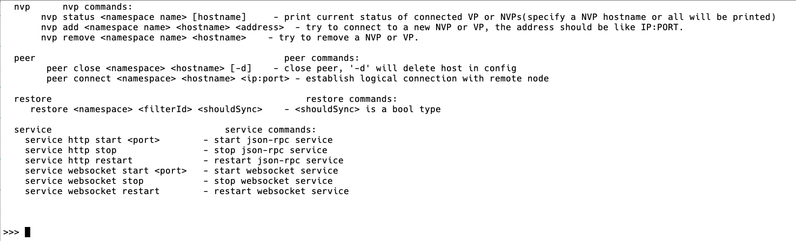

非共识节点介绍¶
引言¶
编写目的¶
本文档用于向开发、运维人员介绍NVP功能和使用方式。
NVP（Non-Validate Peer）不参与共识，仅通过信任的VP来同步数据，并对外提供数据查询、交易转发上链等服务。NVP同一时刻只能连接一个VP，但可动态替换VP，VP可以连接多个NVP。
连接方式¶
vp和nvp互相连接一共四种方式，分别是：
在vp的配置文件里增加nvp信息，启动后自动连接；
在nvp的配置文件里增加vp信息，启动后自动连接；
通过ipc命令，在vp上动态添加nvp；
通过ipc命令，在nvp上动态添加vp；
启动节点&检查证书配置¶
VP节点部署¶
可以参照部署文档，启动vp节点。
NVP节点部署¶
NVP与VP之间需要进行基于证书的身份认证：在双方进行网络连接时，VP需要验证NVP确实拥有自己为其签发的rcert证书，否则将无法正常通信。
基于VP网络CA模式选择的不同，证书的签发和部署也有两种不同的方式：
非分布式CA下NVP节点部署¶
在非分布式CA的场景下，需要配置nvp的 节点证书和根证书 ：
节点证书–NVP通过节点证书来指定要绑定的VP节点，节点证书由VP节点为其颁发。必须是NVP类型的节点证书（certgen生成）。
根证书–和绑定VP节点的根证书保持一致。目录下可以有多个CA，与VP节点的CA目录保持一致即可。
NVP节点证书配置后的证书目录如下图所示，其中CA目录下存放的文件与VP节点CA目录中的文件相同，certs目录下存放了NVP自己的私钥和VP节点为NVP颁发的节点证书：

注： 以上CA目录下包含了多个CA只是示例中的一种，主要体现为了与VP节点的CA目录保持一致，通常情况该目录下只包含一个CA。
分布式CA下NVP节点部署¶
在分布式CA的场景下，NVP需要配置节点证书和根证书要求如下：
节点证书–NVP通过节点证书来指定要绑定的VP节点，节点证书由VP节点为其颁发。必须是NVP类型的节点证书（由certgen生成）。
根证书–可以是独立的根证书，也可以与VP的根证书保持一致。目录下必须只能包含一个CA。
节点证书配置目录如下图所示，这里CA目录下包含一个.ca文件（根证书），包含一个.priv文件（私钥文件）。certs目录下包含一个节点证书和一个私钥：

注：上图假设NVP节点配置了一个与其他VP节点不同的CA，因此叫做root5.ca，也可以与要绑定的VP节点其CA目录中的文件保持一致。
NVP证书生成¶
对应生成证书的命令:
certgen gk ./key.priv ./key.pub
certgen gc --cn node5 --nvp node1 --ct rcert --pub ./key.pub ./root1.ca ./root1.priv ./node5.cert
解释
--cn 后面参数代表本节点的hostname
--nvp 后面参数为NVP要绑定的VP节点的hostname
--ct 为证书类型，NVP为rcert，VP为ecert
--pub 后面跟需要申请证书节点的公钥的路径，可以是相对路径
./root1.ca 代表证书颁发者的根证书路径，可以是相对路径
./root1.priv 代表证书颁发者的根证书私钥路径，可以是相对路径
./node5.cert 代表要生成的证书的名称
节点连接¶
对于NVP节点来说，若其未连接任何VP节点，也能正常工作，但不能转发交易，不能同步新数据。当要与VP节点连接时，NVP节点需要提前准备和VP相连的证书文件，还需要进行相应的配置：
NVP作为独立节点启动，需要在NVP节点的 configuration/dynamic.toml 文件中 修改self节点名称、port端口、域配置。
注意： NVP的配置信息不能和VP节点的配置信息重复
在NVP节点的 configuration/global/ns_dynamic.toml 文件 修改[self]信息， 具体的配置根据不同的连接方式略有不同，在下面详细介绍。
配置完成之后，可以通过 start.sh 脚本或 ./hyperchain 来启动节点。由于VP和NVP可以动态地建立连接，因此无须同时启动。
VP和NVP节点互相连接方式一共有四种，选择任意一种方式都可以完成NVP和VP的连接，下文将详细介绍每种连接方式。
在VP上配置NVP¶
如果要在VP启动时能够自动去连接指定的NVP，需要在VP节点的 configuration/global/ns_dynamic.toml 文件做相应修改。在四个VP节点启动并相互连接的场景下，增加两个与node1相连接的NVP需要修改的配置项如下所示:
[[nvps]] # 运行时修改。nvps数组在节点运行过程中实时变化。
hostname = "nvp1" # nvp节点的名称
score = 10 # 默认为10，表示节点的优先级
[[nvps]] # 运行时修改。nvps数组在节点运行过程中实时变化。
hostname = "nvp2" # nvp节点的名称
score = 10 # 默认为10，表示节点的优先级
[p2p]
[p2p.ip]
[p2p.ip.remote]
hosts = [
"node1 127.0.0.1:50011",
"node2 127.0.0.1:50012",
"node3 127.0.0.1:50013",
"node4 127.0.0.1:50014",
"nvp1 127.0.0.1:50215",
"nvp2 127.0.0.1:50216",
]
由于NVP是namespace级别的节点，所以只需要增加nvp列表字段：
[[nvps]]表示nvp数组，数组中记录有nvp的信息。
[p2p]的hosts列表中，增加nvp的节点名和地址信息字段。
其他部分的内容无需修改，[self]中的n数量指的是连接的vp数量，无需变化。
在NVP上配置VP¶
同理，在NVP节点启动前需要指定连接的VP，先按照部署文档进行必要的地址端口修改，然后在NVP节点的 configuration/global/ns_dynamic.toml 文件做相应修改。 NVP只能连接一个VP ，需要修改的配置项如下:
[[nodes]] # 运行时修改。nodes数组记录vp节点信息
# 在节点运行过程中实时变化。
hostname = "node1" # vp节点的名称
score = 10 #节点的优先级，默认为10
[p2p]
[p2p.ip]
[p2p.ip.remote]
# hosts里面需要配置nvp连接的vp的节点名称和ip地址
hosts = ["node1 127.0.0.1:50011"]
[self]
hostname = "nvp1" # nvp节点的名称
n = 1 # 连接的vp数量(0或者1)
type = "nvp" # 节点类型
[[nodes]]字段，只添加与NVP节点连接的VP节点信息；
[p2p]字段，同时配置VP的节点名称和ip地址；
[self]字段，修改对应的NVP信息；
hostname为NVP节点的名称；
n表示要连接的VP数量为1（NVP上n的数值<=1)；
type字段用来记录节点的类型为NVP；
通过ipc命令新增¶
上述通过配置的方式需要进行节点的启停从而使配置生效，实际上也可以通过ipc命令动态地进行NVP的增删操作。
命令格式： nvp add <namespace> <hostname> <address> 。
通过ipc命令新增VP¶
在nvp上也可以通过命令动态地增删VP，这里不再赘述。
IPC命令¶
平台提供查询NVP状态、新增NVP、删除NVP三类IPC运维命令。
nvp status ：查询NVP的当前状态，在NVP和VP执行返回信息不同；
nvp add ：在VP上执行为新增NVP，在NVP上执行为新增VP；
nvp remove ：在VP上执行为删除NVP，在NVP上执行为删除VP。
IPC命令格式如下:
nvp add <namespace> <hostname> <addr> //新增
nvp remove <namespace> <hostname> //删除
nvp status <nameapce> [hostname] //状态查询
调用IPC命令前，需要先启动IPC交互式命令行:
./hyperchain -s --ipc=hpc_1.ipc
进入如下页面，命令行启动成功：

nvp status¶
该命令可以用于查询NVP和VP的连接状态。 VP节点上可以同时得知连接的NVP的状态和自己的状态；NVP节点只能查询到自己的状态信息 。
命令： nvp status <namespace> [hostname] （该条命令可在VP和NVP上执行）
上述命令格式的具体含义如下所示：
<namespace> ：必要参数，由于NVP是namespace级别的节点，因此需指定所在的namespace；
[hostname] ：可选参数，在VP上调用时，若不指定hostname，将以列表形式返回所有与VP相连的NVP状态信息；在NVP上调用时，由于NVP只能和一个VP相连，是否指定hostname对返回结果没有影响。
在NVP上调用 nvp status 命令，返回信息如下表所示：
返回信息 |
含义 |
|---|---|
hostname |
NVP连接的VP名称 |
nvp_status |
NVP当前的状态 |
height |
NVP当前区块高度 |
在VP上调用 nvp status 命令，返回信息如下表所示：
返回信息 |
含义 |
|---|---|
hostname |
VP连接的NVP名称 |
vp_status |
VP当前的状态 |
nvp_status |
NVP当前的状态 |
height |
NVP当前区块高度 |
msg |
对当前NVP的描述，这份描述内容是NVP的握手或区块事件的回复信息 |
以下是一些正常的状态指令实例：
NVP节点查询状态:
# nvp节点和一个vp节点相连接:格式 nvp status <namespace>
>>> nvp status global
{hostname: node1, nvp_status: IDLE, height: 0}
# nvp节点和一个vp节点相连接:格式 nvp status <namespace> [hostname]
>>> nvp status global node1
{hostname: node1, nvp_status: IDLE, height: 0}
VP节点查询状态:
# 场景：vp节点，和多个nvp节点相连接。
# 使用命令格式 nvp status <namespace> 查询
>>> nvp status global
{hostname: nvp1, vp_status: IDLE, nvp_status: NORMAL, height: 0, msg: NULL}
{hostname: nvp2, vp_status: IDLE, nvp_status: NORMAL, height: 0, msg: NULL}
# 使用命令格式 nvp status <namespace> [hostname]查询其中一个节点信息
>>> nvp status global nvp2
{hostname: nvp2, vp_status: IDLE, nvp_status: NORMAL, height: 0, msg: NULL}
# 使用命令格式 nvp status <namespace> [hostname]查询其中一个节点信息
>>> nvp status global nvp1
{hostname: nvp1, vp_status: IDLE, nvp_status: NORMAL, height: 0, msg: NULL}
nvp add¶
该命令用于动态增加节点场景，VP和NVP都可以使用该指令动态增加节点。
命令： nvp add <namespace> <hostname> <address>
上述命令格式的具体含义如下所示：
<namespace> ：必要参数，由于NVP是namespace级别的节点，因此需指定所在的namespace；
<hostname> ：必要参数，指定要连接节点的名称；
<address> ：必要参数，指定要连接节点的ip地址；
注意：新增命令的成功返回并不意味着连接建立成功，若在VP上执行新增命令，则可以通过先前介绍的 nvp status 命令查询NVP状态，若查询结果显示 nvp_status=NORMAL 则代表连接建立成功，而若一直处于 ABNORMAL 状态，则需要根据日志进一步排查问题；而由于NVP端无法查询VP状态，因此若在NVP上执行新增命令，是否连接成功只能通过日志来进行确认。
NVP连接VP示例
# 初始阶段，nvp没有连接任何vp
>>> nvp status global
this nvp connects no vp
# 正确使用add命令，连接node1，此时不代表新增node1成功
>>> nvp add global node1 127.0.0.1:50011
success
# 使用状态查询，发现成功连接vp节点
>>> nvp status global
{hostname: node1, nvp_status: IDLE, height: 0}
nvp remove
>>>>>>>>>>>>>>
该指令用于VP和NVP之间断开连接，VP和NVP都可以使用该指令动态删除节点。
ipc命令格式： nvp remove <namespace> <hostname>
<namespace> ：必要参数，由于NVP是namespace级别的节点，因此需指定其所在的namespace；
<hostname> ：必要参数，指定要连接节点的名称；
该命令的行为如下：
通知对端进行同样的删除操作；
断开网络逻辑连接；
删除对端配置文件信息；
清空相应的缓存；
进行证书吊销；
该命令有如下两种返回值：
remove [hostname] success: 这意味着成功通知到对方，双方都会执行上述删除流程；
inform [hostname] to delete failed, maybe need manual operation: 这意味着由于网络或其他节点异常问题，导致未能成功通知到对端进行删除，在这种情况下，本地仍然会执行上述删除流程， 可能带来的影响是 对端的配置文件或内存中仍然保留本节点的信息，因此仍然会尝试进行连接，但由于本节点已经进行了证书吊销，连接不会建立成功， 解决方法是在对端重新执行删除命令 。
VP删除NVP示例
# vp节点查询状态，显示和多个nvp节点连接
>>> nvp status global
{hostname: nvp1, vp_status: IDLE, nvp_status: NORMAL, height: 0, msg: NULL}
{hostname: nvp2, vp_status: IDLE, nvp_status: NORMAL, height: 0, msg: NULL}
# 删除其中一个NVP节点
>>> nvp remove global nvp1
remove [nvp1] success
# 删除成功，查询状态
>>> nvp status global
{hostname: nvp2, vp_status: IDLE, nvp_status: NORMAL, height: 0, msg: NULL}
# 删除第二个NVP节点
>>> nvp remove global nvp2
remove [nvp2] success
# 删除成功，查询状态
>>> nvp status global
this vp connects no nvp
操作实例¶
这章会列举一些实际操作场景。
NVP动态切换VP¶
场景：NVP通过IPC命令动态的切换VP。
IPC命令如下:
>>> nvp status global
{hostname: node1, nvp_status: IDLE, height: 0}
>>> nvp remove global node1
remove [node1] success
>>> nvp status global
this nvp connects no vp
>>> nvp add global node2 127.0.0.1:50012
add node2 success
>>> nvp status global
{hostname: node2, nvp_status: IDLE, height: 0}
使用过程介绍：
NVP目前已经有连接的VP，通过状态查询命令可以查询到当前连接的VP节点信息；
NVP执行指令删除自己所连接的VP节点： nvp remove global node1 ；
NVP节点收到返回信息 remove [node1] success 表明成功删除；
使用状态查询命令查询当前状态，验证已经删除成功，此时应该没有连接任何VP节点，结果应返回 this nvp connects no vp ；
通过add指令，添加新的想要连接的VP节点；添加新的节点之前需要根据 第二章节进行证书配置；
如果VP节点未启动，那么需要先启动该VP节点，节点配置 参考部署文档 ；
在NVP节点执行 nvp add global node2 127.0.0.1:50012 命令；
等待返回 add node2 success ，说明和node2连接的准备工作完成，但此时还不证明已经连接成功；
使用状态查询命令查询当前状态，验证已经添加成功，此时应该成功连接新的VP节点，结果应返回NVP的状态信息： {hostname: node2, nvp_status: IDLE, height: 0} ；
异常处理¶
指令格式输入错误¶
命令长度/类型出现问题:
# 命令长度不够，小于3 >>> nvp status Error: invalid command
# 命令中的namespace不存在 >>> nvp status g Error: namespace [g] not exists
# 命令中长度正确但是指令类型不支持，目前仅支持add、remove、status三种 >>> nvp type global Error: invald command
add指令格式有误:
# 如namespace或者hostname的参数为空，或者输入的ip地址/端口号有问题 >>> nvp add global 127.0.0.1:500231 Error: invalid command
# 命令格式不正确，add命令长度必须为5，即nvp add namespace hostname addr >>> nvp add global Error: invalid command: expected length: 5
>>> nvp add global node1 Error: invalid command: expected length: 5# 端口号异常 >>> nvp add global node1 127.0.0.1：50011 Error: Uknown rune: 65306
解决方案： 参照 第4章节 ，正确输入指令
查询状态时VP与NVP并未互相连接¶
在状态查询指令之中，输入 nvp status <namespace> [hostname] 指令，如果查询询不到，根据节点类型返回 this vp connects no nvp/this nvp connects no vp
解决方案： 使用添加连接命令，进行节点连接。
重复添加存在节点¶
# 如果输入指令中的hostname和现在已经启动的vp/nvp的hostname重复将会报错>>> nvp add global node1 127.0.0.1:50023 Error: hostname collide with existed vp
解决方案： 检查NVP，VP，CVP各个节点的配置文件，查看是否有重名现象，进行更改。
删除并不存在的节点¶
# 删除并不存在的节点>>> nvp remove global nvp2 Error: not existed: nvp2
解决方案： 该节点不存在或已经删除成功，无法再进行重复操作，可以进行下一步操作，无需处理。
添加节点失败¶
在添加节点之后如果出现以下情况说明添加节点失败：
1）如果日志信息一直在显示反复连接，出现timeout等日志信息，此时表明建立连接失败；
2）如果是vp节点使用状态查询的指令，如果连接的nvp节点状态一直都是 ABNORMAL 状态，也表明建立连接出现问题。
解决方案：
此时不做处理也可以正常运行，但是后台会一直尝试连接该节点，反复打印timeout日志信息；
如果想要停止打印日志信息，用户可以调用remove指令撤回上一条连接add指令。
# 删除节点成功>>> nvp remove global node1 remove [node1] success# vp节点和nvp之间的连接存在问题，需要人工介入 >>> nvp remove global nvp1 inform [nvp1] to delete failed, maybe need manual operation
针对remove出错，没有成功返回success信息的场景
解决方案： nvp和vp之间的连接状态不正常，需要根据日志信息进行人工介入。